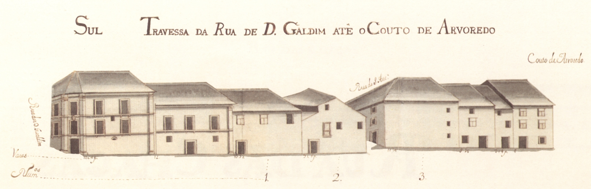

Travessa da Rua de D.Gualdim até ao Couto do Arvoredo
Travessa da Rua de Gualdim até ao Couto do Arvoredo - norte

Travessa da Rua de Gualdim até ao Couto do Arvoredo - sul
Mais um fragmento da rua das Travessas, o último no sentido Este-Oeste. Só no
último quartel do século passado a rua das Travessas se prolongaria além da rua Verde
e Couto do Arvoredo, cortando a muralha, para desembocar no campo das Carvalheiras,
então chamado de S.Miguel o Anjo.
A transformação recebida há cem anos nesta artéria, qua a fez passar a ter o
dobro da largura, destruiu todas as casas apresentadas no Mappa. E pena foi,
porque embora este troço de rua seja de interesse secundário na cidade de então,
apresentava uma casa brasonada, em pedra, de 3 pisos, no gaveto com a rua de
D. Gualdim e uma curiossísima casa com escada exterior, talvez quinhentista, nada vulgar
neste documento.
Das 6 casas do lado Norte e 7 do Sul, são prazos do Cabido 2 de cada lado.
Esta travessa, está atualmente integrada na rua D. Afonso Henriques.